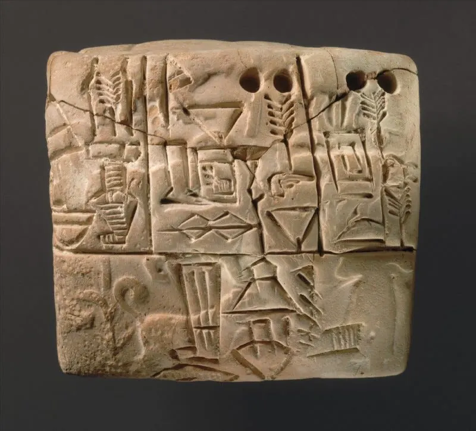
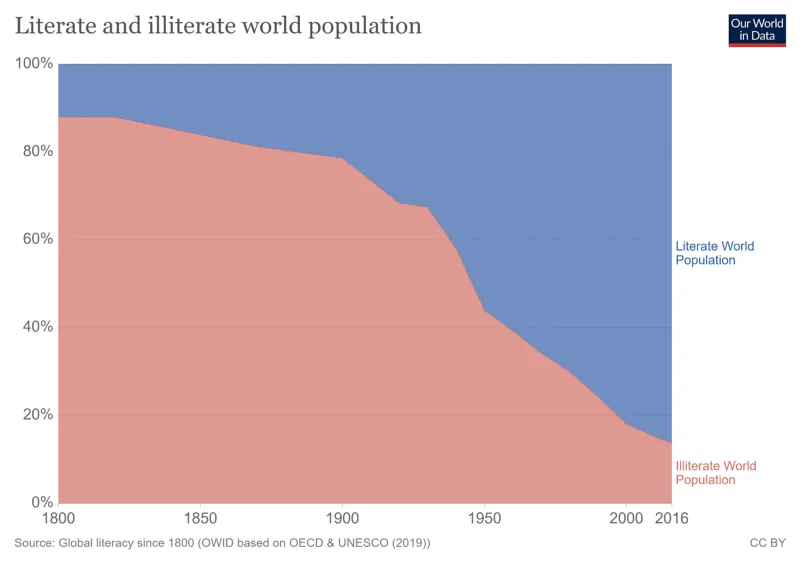
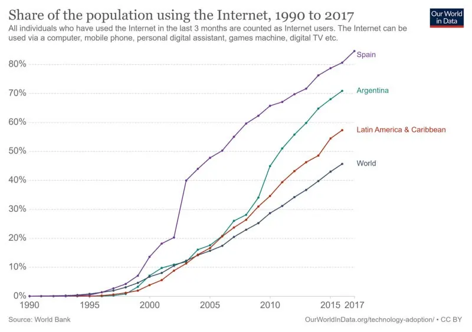
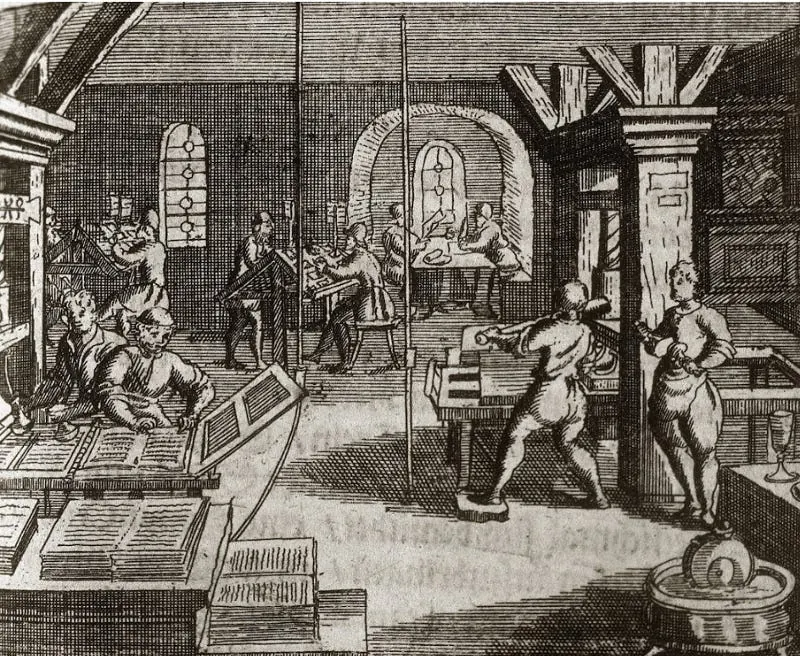
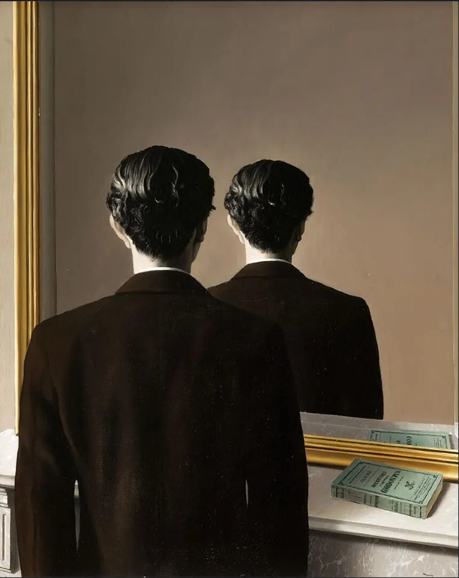

Diario de un Robot · 27 de septiembre de 2020September 27, 2020 · Serie: ¿Deberíamos escribir?
¿Deberíamos escribir?
Sí. Una característica fundamental nos distingue del resto de las especies animales: la posibilidad de inventar y contar historias.
This essay is only available in Spanish for now.

¿Deberíamos escribir?
Sí.
¿Por qué?
Desde los comienzos de nuestra especie, una característica fundamental nos distingue del resto de las especies animales: la posibilidad de inventar y contar historias. La habilidad de hilar ficciones, ya sea de manera consciente o inconsciente, nos identifica como humanos. Estas ficciones son muchas veces el tejido que nos une, ya sea por una nación, una identidad o una moneda. Hasta la fecha parece que somos la única especie viva con la capacidad de transmitir ideas complejas, abstracciones, planes futuros y eventos pasados. El lenguaje es un rasgo distintivo de nuestro linaje. Nuestra capacidad de lenguaje nos hace humanos, y en gran medida una mayor capacidad lingüística se traduce en mayor capacidad de expresión. Cuanto más complejo, nutrido y articulado es nuestro mundo interno, ya sea por vocabulario, capacidad de hilar frases o construir razonamientos intrincados, mayor es nuestra capacidad de proyección al mundo exterior.
Esta oportunidad de dejar tu voz y perspectiva plasmada en el papel es una posibilidad que la mayoría de la Humanidad no tuvo.
¿Quién puede escribir?
Hasta hace muy poco tiempo muy poca gente tenía acceso a la escritura. Aunque la capacidad de contar historias fuese universal, la permanencia de los relatos dependía de nuestro origen. Un sistema de castas regía en la mayor parte del mundo donde solo nobles, oficiales religiosos y burócratas eran letrados. Al mirar a nuestro correlato socioeconómico, político y educativo no hace falta ir demasiado atrás en el tiempo para ver diferencias gigantescas en oportunidades.
Es así como la mayor parte de los humanos que vivieron sobre la tierra no han podido dejar rastro escrito de su existencia, sus voces y perspectivas individuales quedaron para siempre sepultadas con su muerte. Solo a través de historias orales colectivas esas voces se integraron, distorsionadas con el tiempo y muchas veces incluso perdidas con la desaparición de su comunidad o las mutaciones propias de la cultura.
El analfabetismo sigue siendo un problema a solucionar en el mundo, pero cada vez menos personas lo sufren. Hoy hay solo un 45,79 % de la población con acceso a internet y un 13,75 % que no puede escribir. Nosotros estamos fuera de esos grupos, ¿consideramos esa distinción?


¿Tenemos las herramientas?
Nacimos con un cerebro apto para contar historias, y si estamos acá, desarrollamos lo suficiente nuestro centro de lenguaje para leer y escribir. No solo tenemos la capacidad, sino también las herramientas para hacerlo. Este espacio está disponible gracias a la virtualidad, somos dueños de usarlo, imitar e iterar sobre él. Esto suena a disco rayado pero nunca en la historia de la Humanidad componer y compartir un texto fue tan fácil. Podemos crear y compartir nuestros textos virtualmente gratis. Si están leyendo esta nota lo más probable es que tengan acceso a algún tipo de plataforma para compartir sus escritos.
“Es que yo no soy creativo” y “A mí no se me ocurren esas cosas” son dos frases habituales y asesinas de la escritura. La supuesta esencia creativa es un mito.

¿Quién es creativo?
Siempre que un término quiera diferenciar las capacidades humanas desde su nacimiento debemos tener un ojo crítico. Esta diferencia no es más que una creencia: una etiqueta utilizada en general de forma exclusiva que establece una diferenciación de capacidades. Es la apropiación de una esfera de las actividades humanas por un grupo sectario. El talento y el nacimiento no definen al escritor.
Los humanos somos creativos de nacimiento y esta capacidad es expresada de distintas maneras. Volcarla en la escritura o en el arte no es más que una decisión, ya sea consciente o no. Lo que llamamos creativo o no creativo no es más que una escala. Es la práctica lo que nos lleva hacia la cima. Las asociaciones creativas pueden darse de forma individual, pero reaccionamos a estímulos, de ahí lo esencial de la lectura. Todos respondemos a la creatividad de otros. ¿Por qué alguien no respondería a la tuya?
¿A quién le importa?
Desde la primera palabra escrita hasta hoy hay una cadena ininterrumpida de escritores y lectores que han comunicado información de lo más diversa. Estas palabras van desde registros contables hasta transcripciones de nuestras mitologías orales, incluyendo a toda obra literaria alguna vez producida. Nuestra voz es única como lo es nuestra perspectiva. No solo es irrepetible sino que sin ella quizás no se desbloquean otras semejantes.
Hay autores que cuando los leemos sentimos que nos entienden y nos permiten entendernos a niveles que no sabíamos posibles. Al escribir no solo replicamos ese mecanismo, podemos ser ese autor para alguien más. Un lector que estaba a la espera para comenzar a desarrollar su creatividad. Hoy hay acceso no solo a compartir las cosas de forma pública y rápida, sino a encontrar nuestro propio nicho de personas de intereses compartidos. Gracias a esto podemos ser la persona que el otro necesitaba leer.
Todo esto quizás suena a una gran estafa piramidal de la escritura, y quizás lo sea, pero si alguien nos pasó su creatividad mi postura es que deberíamos hacerlo para los demás. Un secreto es que seguro disfrutemos al hacerlo.

¿Y vos?
No solo se trata de habilitar la creatividad de alguien más, sino de encontrar tu voz. Este proceso puede tomar meses, años o quizás décadas, según el autor. La mayoría de los autores describen este fenómeno como un nuevo amanecer, y esta búsqueda activa puede ser un pilar de la propia escritura. Escribí hasta hallar tu voz y hay mucho que encontrar en el camino.
¿Entonces?
¿Deberíamos escribir? Sí, deberíamos.
¿Hay personas creativas? No, es una cuestión de práctica.
¿Qué nos espera? Un proceso arduo pero divertido, con la oportunidad de encontrar nuestra voz.